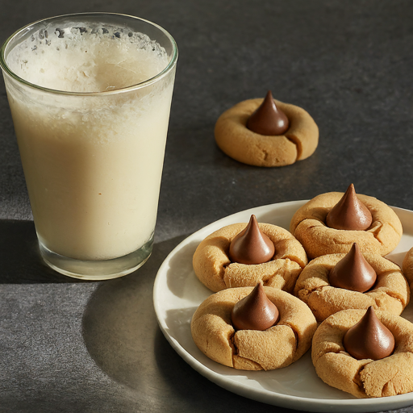

Back to recipes
Peanut Butter Blossoms

Prep Time: 1 hour, 30 minutes (includes chilling) Cook Time: 12 minutes Total Time: 1 hour, 45 minutes Yield: 24 cookies
Description
These homemade peanut butter blossoms are extra soft and thick, super simple to make, and delightfully peanut buttery. So many reasons why this is a classic holiday cookie recipe! Don’t forget to place the cookies in the freezer for 10 minutes to prevent the chocolate kiss candy from melting.
Ingredients
- 1 and 1/4 cups (156g) all-purpose flour (spooned & leveled)
- 1/2 teaspoon baking soda
- 1/4 teaspoon salt
- 1/2 cup (8 Tbsp; 113g) unsalted butter, softened to room temperature
- 1/2 cup (100g) packed light or dark brown sugar
- 1/4 cup (50g) granulated sugar
- 1 large egg, at room temperature
- 3/4 cup (about 185g) creamy peanut butter
- 1 teaspoon pure vanilla extract
- 24 chocolate kiss candies, unwrapped
\
Coating
- 1/2 cup (100g) granulated sugar or colored sanding sugar (can mix and match colors)
Steps
- Whisk the flour, baking soda, and salt together in a medium bowl. Set aside.
- In a large bowl using a hand mixer or a stand mixer fitted with paddle attachment, beat the butter for 1 minute on high speed until creamy. Switch to medium-high speed and beat in the brown sugar and 1/4 cup (50g) granulated sugar until completely creamed and smooth, about 2 minutes. Add the egg and beat until combined, about 1 minute. Scrape down the sides and bottom of the bowl with a silicone spatula as needed. Add the peanut butter and vanilla extract and beat until combined.
- Add the flour mixture to the wet ingredients and beat on low speed until combined. The dough will be very creamy and soft. Cover and chill the cookie dough in the refrigerator for at least 1 hour, and up to 3 days.
- Preheat oven to 350°F (177°C). Line two large baking sheets with parchment paper or silicone baking mats. (Always recommended for cookies.) Set aside. Also, make sure there’s room in your freezer because the cookies will need to be placed inside to prevent the chocolates from melting.
- Roll & Bake: Scoop and roll cookie dough, about 1 heaping Tablespoon of dough each. Roll each ball in the 1/2 cup of sugar (or sanding sugar) and arrange on the baking sheet about 3 inches apart. Bake for 11–13 minutes or until the tops begin to slightly crack. Remove cookies from the oven and allow to cool on the baking sheets for 5 minutes.
- Set the Chocolate: Press a chocolate kiss candy into the center of each, then, using a thin spatula, immediately transfer the cookies to a large plate or a few smaller plates (gently—they’re soft). Place the plate(s) of cookies in the freezer for 10 minutes to quickly set the chocolate in the cookie.
- Remove from the freezer and serve.
- Cookies stay fresh covered at room temperature for up to 1 week.